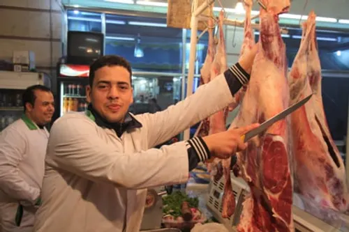
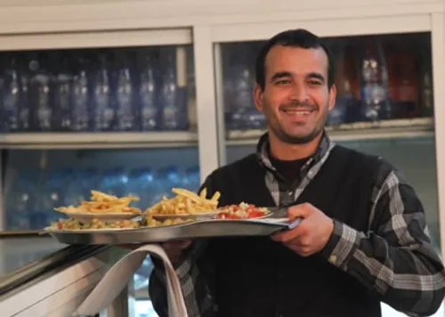
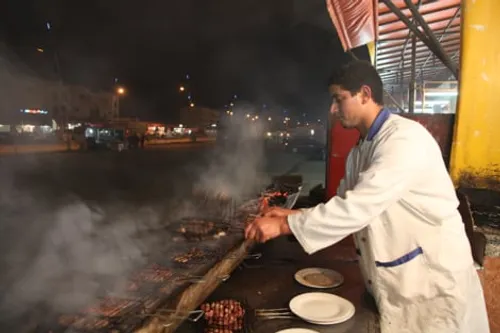

Oued Amlil
Introduction
Un village authentique
Oued Amlil est un village traditionnel près de Taza, offrant une expérience authentique de la vie rurale marocaine. Avec ses maisons en terre, ses champs verdoyants et son ambiance paisible, c'est un lieu idéal pour découvrir la culture locale.
Les visiteurs peuvent explorer les ruelles étroites, rencontrer les habitants, déguster des produits locaux et profiter de la tranquillité de la campagne environnante.
Galerie



Informations pratiques
Localisation
Village situé à proximité de Taza, accessible par route régionale
Accès
Accès facile en voiture ou en taxi depuis Taza, parking disponible
Meilleure période
Toute l'année, mais particulièrement agréable au printemps et en automne
Tarifs
Visite gratuite, possibilité d'acheter des produits locaux
Conseils pour les visiteurs
Respectez les habitants
Demandez la permission avant de prendre des photos et soyez poli dans vos interactions.
Achetez local
Soutenez l'économie locale en achetant des produits artisanaux et agricoles.
Explorez à pied
Les ruelles sont étroites, marchez lentement et profitez de l'ambiance.
Préparez-vous au soleil
Apportez un chapeau et de l'eau, surtout pendant les mois chauds.